AnySync moves your editor settings, keys, dotfiles, project folders and lists of installed tools from one computer to another, whichever of macOS, Windows and Linux each one runs. Files go straight device to device, end-to-end encrypted, and an AI agent finishes the setup.
In development: the command line works on all three, the window app is nextNo server. The two devices agree through a private GitHub repository of yours; the files themselves never go there.
One device asks the other to send or to receive, and the other approves.
The sender offers what it has. The receiver takes what has a place on its own system, or only what you name.
Files go straight over your network, sealed with XChaCha20-Poly1305. A dropped connection picks up where it stopped.
Each item lands where its system keeps it. GOAL.md tells your AI agent what is left: paths to rewrite, tools to install from the lists.
An item travels by name, not by the sender's paths; the receiver puts it where its own system keeps it, and keeps what was there as .before-anysync.
| Item | macOS | Windows | Linux |
|---|---|---|---|
| VS Code settings | ~/Library/Application Support/Code/User | %APPDATA%\Code\User | ~/.config/Code/User |
| Git config | ~/.gitconfig | %USERPROFILE%\.gitconfig | ~/.gitconfig |
| Claude Code | ~/.claude | %USERPROFILE%\.claude | ~/.claude |
| Wave config | ~/.config/waveterm | %USERPROFILE%\.config\waveterm | ~/.config/waveterm |
| Videos | ~/Movies | %USERPROFILE%\Videos | ~/Videos |
node_modules, target and .venv, stay behind.The native ones go much deeper, since both ends share the same paths, preferences and keychain. AnySync takes what still means something on the other system.